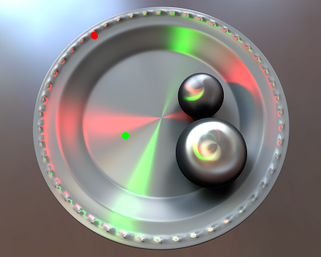
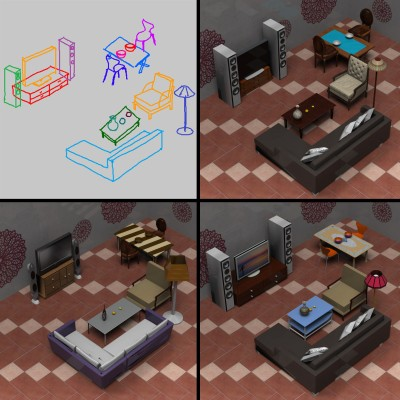
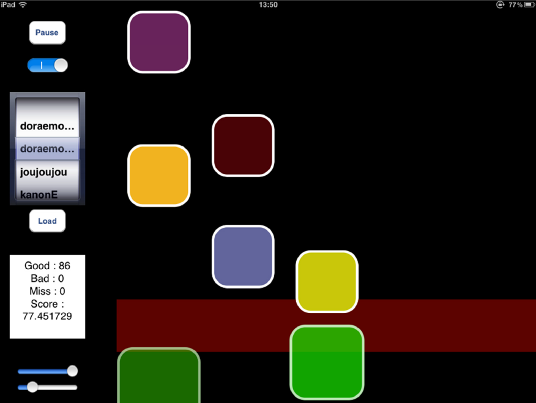

MENU
Skip menu |
Welcome to my website!Hi, I am Weilun Sun, an undergraduate in Computer Science & Technology Department of Tsinghua University. Computer Graphics is my favorite field. I am conducting research under the guidance of Dr. Kun Xu. My CV is here.
Contact me Email: sunweilunjwilson(at)gmail.com Phone: +86-010-15901519860
Check out my soccer freestyle videos in Cool Stuffs! |
Publications
|  | Anisotropic Spherical Gaussians Kun Xu, Wei-Lun Sun, Zhao Dong, Dan-Yong Zhao, Run-Dong Wu, Shi-Min Hu ACM Transactions on Graphics 32(6), 209:1 - 209:11, 2013. (Proceedings of SIGGRAPH Asia 2013). We present a novel Anisotropic Spherical Gaussian (ASG) function, built upon the Bingham distribution [Bingham 1974], which is much more effective and efficient in representing anisotropic spherical functions than Spherical Gaussians (SGs). In addition to retaining many desired properties of SGs, ASGs are also rotationally invariant and capable of representing all-frequency signals. To further strengthen the properties of ASGs, we have derived approximate closed-form solutions for their integral, product and convolution operators, whose errors are nearly negligible, as validated by quantitative analysis. Supported by all these operators, ASGs can be adapted in existing SG-based applications to enhance their scalability in handling anisotropic effects. To demonstrate the accuracy and efficiency of ASGs in practice, we have applied ASGs in two important SG-based rendering applications and the experimental results clearly reveal the merits of ASGs. [project page] [paper 2.3M] [supplemental 1.7M] [video 45.8M] [bibtex] |
|  | Sketch2Scene: Sketch-based Co-retrieval and Co-placement of 3D Models Kun Xu, Kang Chen, Hongbo Fu, Wei-Lun Sun, Shi-Min Hu ACM Transactions on Graphics 32(4), 123:1-123:12, 2013. (Proceedings of SIGGRAPH 2013). This work presents Sketch2Scene, a framework that automatically turns a freehand sketch drawing inferring multiple scene objects to semantically valid, well arranged scenes of 3D models. Unlike the existing works on sketch-based search and composition of 3D models, which typically process individual sketched objects one by one, our technique performs co-retrieval and co-placement of 3D relevant models by jointly processing the sketched objects. This is enabled by summarizing functional and spatial relationships among models in a large collection of 3D scenes as structural groups. Our technique greatly reduces the amount of user intervention needed for sketch-based modeling of 3D scenes and fits well into the traditional production pipeline involving concept design followed by 3D modeling. A pilot study indicates that it is promising to use our technique as an alternative but more efficient tool of standard 3D modeling for 3D scene construction. [project page] [paper 6.1M] [pptx 33.0M] [supplemental 4.4M] [video 12.5M] [bibtex] |
Presentations
| SIGGRAPH Asia 2013 Technical Paper (Anisotropic Spherical Gaussians) | Nov. 22, 2013 |
| SIGGRAPH Asia 2013 Fast Forward (Anisotropic Spherical Gaussians) | Nov. 19, 2013 |
Small Projects
A retriever UI based on SIGGRAPH 2012 paper Sketch-based Shape Retrieval. (Click here to download executable) |
|
A basketball shooting game, based on a simple physics engine I developed. (Click here to download executable) |
|
|  | This project aims for automatically extracting drum sounds form songs without human interference, so that any song with percussions can be played in rhythm games like Taiko no Tatsujin (太鼓の達人). |